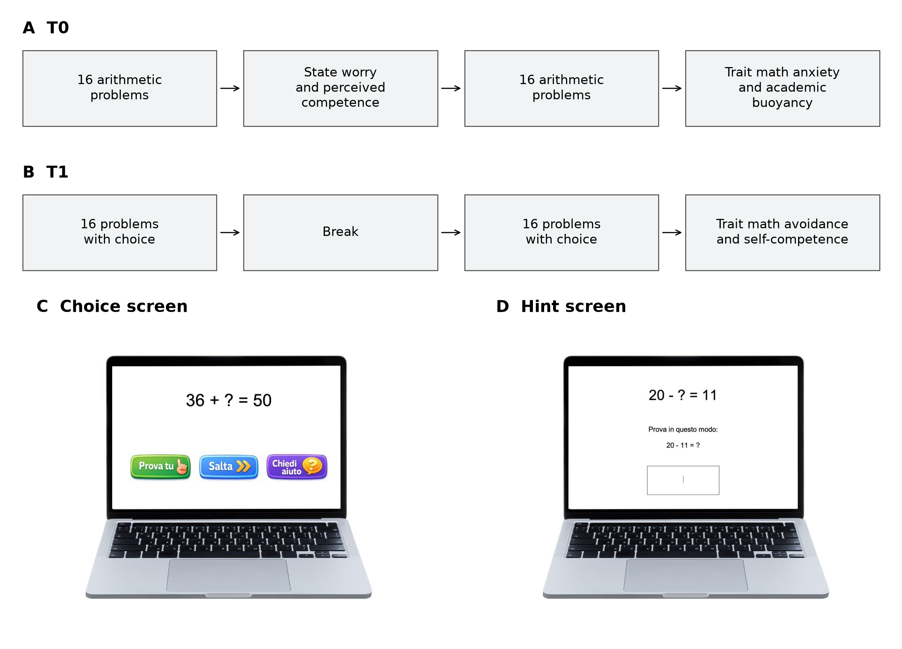
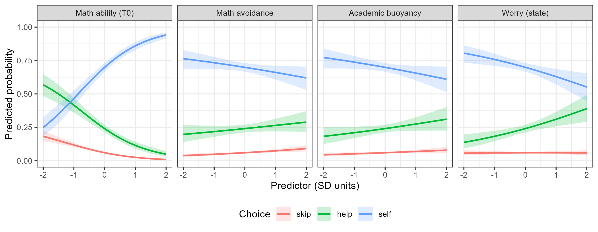

| Variable | M (SD) | Min | Max | Skewness | Kurtosis |
|---|---|---|---|---|---|
| Worry (state) | 5.50 (2.06) | 3 | 12 | 0.90 | 0.23 |
| Perceived competence (state) | 8.36 (2.31) | 3 | 12 | -0.42 | -0.38 |
| Math anxiety (trait) | 22.26 (7.57) | 9 | 44 | 0.16 | -0.64 |
| Self-competence (trait) | 27.04 (5.96) | 10 | 40 | 0.21 | -0.53 |
| Academic buoyancy | 19.27 (4.90) | 4 | 28 | -0.34 | -0.08 |
| Math avoidance | 17.69 (5.26) | 10 | 40 | 1.12 | 1.70 |
| Math ability (T0) | 11.77 (7.90) | 0 | 32 | 0.45 | -0.77 |
From Attitudes to Behaviour: The Role of Emotions and Motivation in Math Choices in Primary School
Riccardo Pagan1, Alice Masi1, Enrico Toffalini2, and Sara Caviola1
1Department of Developmental Psychology and Socialization, University of Padova
2Department of General Psychology, University of Padova
Abstract
Math-related behaviours are hard to study in primary school, where children cannot opt out of mathematics. We used a behavioural task in which 547 children in Grades 4 and 5 could skip each arithmetic problem, ask for a hint, or solve it on their own. We initially treated the three choices as ordered levels of task engagement (skip < help < self), as preregistered. The data offered little support for this ordinal specification: a multinomial model, which imposes no order, predicted the choices clearly better than an ordinal model, and the ordinal model itself required a category-specific effect. The choices were therefore better described as categories. In the multinomial model, prior math ability was the strongest predictor. Among trait attitudes, math avoidance showed the clearest association with fewer self-reliant responses relative to skipping, although it failed the CFA screening criterion. State worry was associated specifically with asking for help. Perceived competence was not a credible predictor, and academic buoyancy showed an unexpected negative association that appeared only when the other attitudes were controlled. Behavioural choices do not seem to lie along a single dimension of engagement; help-seeking may partly work as masked avoidance.
Keywords: math anxiety, math avoidance, academic buoyancy, help-seeking, behavioural measures, multinomial models, preregistration
From Attitudes to Behaviour: The Role of Emotions and Motivation in Math Choices in Primary School
Attitudes and emotions towards mathematics are thought to affect learning partly through behaviour. Anxious or avoidant students are expected to engage less with mathematics, and lower engagement means less practice (Ashcraft, 2002). Testing this pathway requires measuring behaviour, which is harder than measuring attitudes. Math-related behaviours have been studied using self-reports of classroom engagement (Quintero et al., 2022) or inferred from distal outcomes such as educational and career choices (Cuder et al., 2024). Behavioural paradigms have been developed mainly with adults: math-anxious adults choose less demanding math problems even at the cost of lower rewards (Choe et al., 2019), and are quicker to avoid math-related stimuli (Pizzie & Kraemer, 2017).
In primary school, children cannot opt out of mathematics, so avoidance cannot be observed in course or career choices. Behaviour has to be observed during math activities, objectively and in real time (Hilz et al., 2025; Wang et al., 2025). Hilz et al. (2025) used logs of children’s practice in an adaptive learning program and tested whether practice behaviour mediates the link between math anxiety and performance. Wang et al. (2025) gave the option of skipping problems or asking for help, and found math anxiety to be associated with skipping problems and with less help-seeking after errors. We adapted this paradigm: for each problem, children could skip it, ask for a hint, or solve it on their own. This gives an item-level measure of behaviour that does not rely on self-report.
We examined attitudes at trait and state level. Trait measures describe stable dispositions: math anxiety; math self-competence, children’s judgement of their own ability in mathematics (Harter, 2012); math avoidance, the tendency to avoid math-related situations and thoughts (Conlon et al., 2022); and academic buoyancy, the capacity to deal with the everyday setbacks and challenges of school (Martin & Marsh, 2008). State measures refer to a specific math task and are collected close to it: worry, the cognitive component of state math anxiety, and perceived competence in the task just completed (Mammarella et al., 2023). Because they refer to the task at hand, state measures should be closer to behaviour than trait measures. We therefore expected math anxiety and self-competence to relate to choices mainly through their state counterparts, worry and perceived competence. Avoidance and buoyancy have no state counterpart in our design and were expected to relate to choices directly: avoidance because it already describes a behavioural tendency, buoyancy because each problem is a small challenge with a risk of failure, which is what buoyancy is about. Buoyancy also moderates the relations between achievement emotions and achievement (Putwain et al., 2022).
Choices also depend on ability. A child may skip a problem to avoid it, but also because they correctly judge it too difficult. Prior math ability was therefore controlled in all models, to separate ability-driven from attitude-driven variation in choices; gender was also controlled.
The task rests on an assumption: that the three options are ordered levels of engagement, with skipping as the lowest, help-seeking as intermediate, and self-reliance as the highest. This is plausible but not obvious. Help-seeking is ambivalent: asking for a hint to understand how to solve a problem is an adaptive strategy, but help can also be sought to avoid effort, and students who feel that asking exposes their lack of competence may avoid it altogether (Ryan et al., 2001). Anxiety might therefore increase help-seeking, as a way to reduce the risk of failure, or decrease it, as found by Wang et al. (2025). If help-seeking partly serves to avoid effort or failure, help does not lie between skipping and self-reliance. The two possibilities make different predictions. If the choices are ordered, each predictor should have a graded effect, from skipping through help-seeking to self-reliance. If they are distinct behaviours, a predictor may relate to one choice without shifting the others in a common direction. The question is therefore whether the choices are extremes of a single continuum, from avoidance to buoyant engagement, or reflect distinct behaviours.
The Present Study
We preregistered two research questions [TODO: OSF link]:
- RQ1. Do math attitudes (avoidance, buoyancy, worry, perceived competence) predict children’s behavioural choices (skipping, help-seeking, self-reliance), controlling for gender and math ability? Do state attitudes statistically account for part of the association between their trait counterparts and these choices?
- RQ2. Within the ordinal representation of the choices (skip < help < self), do some predictors require category-specific effects?
We expected more adaptive profiles (higher buoyancy and perceived competence) to predict more engaged choices, and higher avoidance and worry to predict less engaged choices. We expected the choices to be compatible with an ordered representation of engagement, while acknowledging that proportional odds might not hold for all predictors. If the ordinal structure proved clearly inadequate, a categorical specification was to be explored in follow-up analyses.
The preregistration already described the RQ1 analyses as inferentially exploratory. The directions of the effects were fixed in advance, but the final set of predictors and the model structure depended on a sequence of data-driven selection steps; p-values are therefore conditional on the selected model and control false positives only partially.
RQ2 checks the assumption on which RQ1 relies. Since the data did not support an ordered structure, we explored a categorical specification, as planned. We therefore report results in logical order: first the structure of the choice, then the predictors. The ordinal models are reported in full; the categorical model, which became the main model for RQ1, is exploratory. Deviations are listed in Table 1.
Method
Participants
Children in Grades 4 and 5 (aged 9–11 years) were recruited from public primary schools in middle-income areas of [TODO: region], Italy. Head teachers were contacted first; once teachers agreed, parents were asked for written informed consent. Exclusion criteria were formal diagnoses of intellectual disability or neurological/genetic conditions. The study was approved by the ethics committee for psychological research of the University of Padova [TODO: protocol number]. No compensation was given.
As preregistered, children were excluded from the analyses if they missed the whole T1 task, lacked the T0 ability score, or had item-level choices that could not be reconstructed because of technical problems. Children with extreme but valid patterns (e.g., always skipping) were retained, because such patterns are relevant to the research question. The final sample included 547 children (297 girls) from 37 classes in 18 schools: 378 in Grade 4 (207 girls) and 169 in Grade 5 (90 girls). Classes contributed between 6 and 23 children. One child’s T1 export was duplicated; the duplicate rows were removed and the child retained. [TODO: age M, SD (Age is empty in the supplied dataset); number recruited, absent, excluded for each reason.]
Sample Size
We planned for 400 participants, recruiting about 35–40 classes (about 500 children) and expecting about 8% absences per session. Data collection was to stop when 400 eligible children had completed both sessions or when all recruited classes had completed both sessions, whichever came first. [TODO: explain why the final N (547) exceeds 400, e.g., classes already scheduled; if needed, add to the deviations.]
The sample size was justified by simulation, with all predictors and covariates in the model. For the ordinal specification (cumulative link mixed model, 5,000 simulated datasets), we assumed effects per SD of −0.25 for worry, −0.30 for avoidance, 0.30 for buoyancy, and 0.25 for perceived competence on the logit scale (odds ratios between 0.74 and 1.35), and a participant random-intercept variance of 1. With N = 300, power was above .80 for each effect (one-tailed α = .05) and about .83 for all four jointly, also after FDR correction; under the null hypothesis, the Type I error rate was close to .05. For the categorical specification (multinomial mixed model, N from 100 to 500), the standard errors of the four effects on self vs skip fell below the values required for 80% power (Bonferroni-corrected) by N = 300. Code and results are available online [TODO: OSF link].
Procedure
The study had two sessions (Figure 1), administered by computer in small groups in the classroom. T0 took place in March 2026 and T1 between mid-April and late May 2026.
At T0, children solved 16 arithmetic problems, then completed two state questionnaires (worry and perceived competence), then 16 more problems, and finally two trait questionnaires (math anxiety and academic buoyancy). Trait test anxiety was also collected at T0 for a different study and is not analysed here.
At T1, children solved 32 arithmetic problems in two blocks of 16, separated by a break. For each problem, they first chose whether to skip it, ask for a hint, or solve it alone. After the task, they completed two trait questionnaires (math avoidance and self-competence).
Figure 1
Study design and examples of the T1 task screens. Panels A and B show the order of tasks and questionnaires at T0 and T1. Panels C and D reproduce the choice and hint screens from the AIRIPA presentation. Choice buttons read “Try it yourself”, “Skip”, and “Ask for help”; the hint reads “Try this way: 20 − 11 = ?”.

Measures
Math Task
A pool of 100 arithmetic problems with one unknown term (e.g., 34 − ? = 21) was generated with constraints: operands between 12 and 99, no multiples of 10, and balanced position of the unknown term. For each child, 32 problems per session were sampled at random, excluding at T1 the problems already presented at T0. Answers were typed on the keyboard, with a time limit of 25 s per problem, set on the basis of a pilot study. Correct and timely answers scored 1; incorrect, late, or skipped answers scored 0. Prior math ability was the T0 total score (0–32).
Behavioural Choice
At T1, each problem was presented with three options: not solving it (skip), requesting a hint with a brief strategy (help; e.g., for “20 − ? = 11”: “Try this way: 20 − 11 = ?”), or solving it independently (self). Two features discouraged extreme patterns: a mandatory dwell time of 15 s per item after each choice, and an automatic prompt after every 5 consecutive skips or help requests, reminding children of all options. Skipped problems were not treated as missing data: skipping is one category of the outcome. A choice was coded as missing when all three choice indicators were missing in the supplied export; these trials were excluded from the choice models. [TODO: confirm whether these records reflect timeouts before a choice or another logging event; the export contains no timing or event logs.]
Questionnaires
Scores were sums of items; higher scores mean more of the construct. Responses were mandatory, so questionnaire data were complete.
- Math anxiety (trait): Abbreviated Math Anxiety Scale (Caviola et al., 2017), 9 items, 5-point scale.
- Academic buoyancy (trait): Academic Buoyancy Scale (Martin & Marsh, 2008), 4 items, 7-point scale.
- Math avoidance (trait): adapted Math Avoidance Scale (Conlon et al., 2022), 10 items, 4-point scale.
- Math self-competence (trait): adapted from Harter (2012), 10 items, 4-point scale.
- Worry and perceived competence (state): 3 items each, adapted from Mammarella et al. (2023), 4-point scale, referring to the problems just solved.
Preregistration and Deviations
The study was preregistered while data collection was ongoing, before any data were inspected. The preregistration, simulated data, power analyses, and analysis script are available at [TODO: OSF link]. Table 1 lists the deviations (Willroth & Atherton, 2024).
Table 1
Deviations From the Preregistration
| Preregistered | What we did | Reason |
|---|---|---|
| Ordinal (cumulative) model; categorical model only as follow-up if the ordinal structure proved clearly inadequate | Ordinal models reported in full; multinomial model used as the main model for RQ1 | The data did not support the ordinal structure (see Assumption Check) |
| Predictors selected by LOO within the ordinal model (M0 → M1 → M2) | Multinomial model with all predictors | The selection was conducted within the ordinal model; trial-level LOO evaluates prediction for already-observed children (see Results) |
| Pragmatic frequentist inference (one-tailed p, FDR) | Kept for the ordinal models; follow-up models reported with posterior estimates and 95% credible intervals | Follow-up analyses are exploratory |
| Indirect effects (trait → state → choice) | Reported for the ordinal models only | Order of measurement does not support a mediation reading (see Limitations) |
| — | Robustness: linear model on a per-child choice score; class random intercept; binary models | Not anticipated |
| A construct failing CFA screening excluded from all models | Avoidance excluded from the ordinal pipeline but retained in exploratory follow-up models | Scaled CFI = .923; follow-up estimates allow its association with each choice to be examined, with this measurement limitation |
Statistical Analyses
Analyses were run in R 4.5.1. Bayesian models were estimated with brms 2.22.0 (Bürkner, 2017) and the RStan backend, using 4 chains of 2000 iterations, including 1000 warmup iterations per chain (seed 2026). We used brms default priors: flat priors on choice-model regression coefficients, Student’s t(3, 0, 2.5) priors on intercepts, and the corresponding half-t priors on random-effect standard deviations. All continuous predictors were standardised across children. All choice models included a random intercept for participant. Models were compared with Pareto-smoothed leave-one-out cross-validation (PSIS-LOO, Vehtari et al., 2017). A difference in expected log predictive density (ELPD) larger than twice its standard error was taken as a clear preference.
Models were fitted to counts per child and choice, with counts used as likelihood weights. This gives the same likelihood as the trial-level data. For LOO, weighted log likelihoods were divided by the counts and the resulting pointwise estimates repeated for the corresponding trials. Thus, LOO left out one trial, with the child’s other trials available; it did not evaluate prediction for a new child. Full posterior draws were used for inference and then discarded; only numerical summaries, diagnostics and predictions were retained.
Psychometric Screening
We fitted a confirmatory factor analysis (CFA) for buoyancy and for avoidance (criteria: CFI > .95, RMSEA < .08), using WLSMV estimation and the scaled fit indices. The preregistration did not specify scaled or unscaled indices; we used the scaled ones consistently in the ordinal pipeline. If a model did not meet the criteria, at most two correlated residuals could be added, only between items with clear overlap in content or wording. No correlated residuals were added. A construct still failing was excluded from the ordinal pipeline; its inclusion in follow-up models was exploratory (Table 1). Ordinal alpha was computed as a descriptive index, not as a pass/fail criterion. If buoyancy and avoidance correlated above |r| = .70, they were not to be entered in the same model.
Ordinal Models
Choices were modelled with cumulative logit mixed models (Bürkner & Vuorre, 2019), ordered as skip < help < self. In Stage 1, the baseline model (M0) included the state predictors (worry and perceived competence), the covariates (prior math ability and gender), and a random intercept for participant; this is the full mediation model. M1 added predictors passing screening (buoyancy in this run). M2 added math anxiety and self-competence (partial mediation), and was to be estimated only if M1 was preferred over M0. In Stage 2, category-specific effects were added to the selected model one predictor at a time, in the order worry, perceived competence, buoyancy, avoidance, restricted to retained predictors. At each step, the more complex model was retained only if clearly preferred; otherwise the simpler model was kept and selection stopped.
As preregistered, inference on the final model was pragmatically frequentist: MCMC served to estimate coefficients and their standard errors, not for Bayesian inference. Primary directional effects were tested with one-tailed p-values computed from the posterior mean and standard deviation, with FDR correction across the primary effects retained (Benjamini & Hochberg, 1995). Positive coefficients were expected for buoyancy and perceived competence, negative coefficients for avoidance and worry. Indirect effects were computed by multiplying posterior draws of the trait → state paths, from regressions of each state measure on its trait counterpart, by those of the state → choice paths.
Assumption Check
We checked the ordinal assumption in three ways: (a) within the ordinal models, by testing category-specific effects (RQ2); (b) by comparing, via LOO, the cumulative model with a multinomial model that imposes no order, both including all predictors; (c) descriptively, by comparing how the proportions of each choice correlate with the predictors.
Multinomial Model
Choices were modelled with a multinomial logit mixed model with skip as the reference category, including state and trait predictors and controlling for math ability and gender.
Robustness
- A frequentist linear regression on a per-child sum of valid choices (skip = 0, help = 1, self = 2; standardised), with the same predictors, and the same regression on the proportion of self choices, which assumes no order between skip and help; (b) a random intercept for class; (c) binary mixed logistic models [lme4; Bates et al. (2015)] with random intercepts for child, class, and item, for self vs not self, skip vs not skip, and skip vs help (trials without self choice), entering all predictors together or one attitude at a time (plus ability and gender). Binary models with only the child intercept provided a further comparison.
Results
Descriptive Statistics
Table 2 reports the descriptive statistics of the predictors, and Table 3 reports them by gender and grade. In both grades, girls reported higher math anxiety and worry, and lower self-competence, perceived competence, and buoyancy than boys; they also had lower T0 ability, by about four points. Grade 5 children had higher T0 ability than Grade 4 children, also by about four points, but similar attitudes. Correlations are reported in Table 4. Trait and state measures showed good convergent validity: math anxiety and worry (r = .50) and self-competence and perceived competence (r = .36) were correlated but not redundant. Buoyancy was related to the other variables as expected.
Table 2
Descriptive Statistics of the Predictors
Note. Raw scores; N = 547.
Table 3
Descriptive Statistics by Gender and Grade
| Variable | Grade 4 F (n = 207) | Grade 4 M (n = 171) | Grade 5 F (n = 90) | Grade 5 M (n = 79) |
|---|---|---|---|---|
| Worry (state) | 6.10 (2.03) | 4.94 (1.78) | 5.83 (2.35) | 4.77 (1.80) |
| Perceived competence (state) | 7.65 (2.21) | 9.11 (2.01) | 7.69 (2.23) | 9.34 (2.45) |
| Math anxiety (trait) | 24.01 (7.27) | 20.71 (7.95) | 23.12 (6.76) | 20.06 (7.23) |
| Self-competence (trait) | 26.26 (5.52) | 27.85 (5.78) | 25.99 (6.18) | 28.56 (6.74) |
| Academic buoyancy | 18.67 (4.63) | 20.05 (5.20) | 18.41 (4.67) | 20.10 (4.87) |
| Math avoidance | 17.31 (4.88) | 17.55 (5.53) | 18.17 (4.72) | 18.48 (6.10) |
| Math ability (T0) | 8.62 (6.43) | 12.55 (7.69) | 12.97 (7.91) | 16.95 (8.40) |
Note. M (SD) of raw scores. F = girls; M = boys.
Table 4
Pearson Correlations Among the Predictors
| Variable | 1 | 2 | 3 | 4 | 5 | 6 |
|---|---|---|---|---|---|---|
| 1. Worry (state) | ||||||
| 2. Perceived competence (state) | -.57 | |||||
| 3. Math anxiety (trait) | .50 | -.42 | ||||
| 4. Self-competence (trait) | -.25 | .36 | -.38 | |||
| 5. Academic buoyancy | -.39 | .46 | -.44 | .35 | ||
| 6. Math avoidance | .19 | -.25 | .38 | -.35 | -.33 | |
| 7. Math ability (T0) | -.30 | .44 | -.37 | .26 | .30 | -.22 |
Children chose to solve alone in 59.2% of all trials, asked for help in 30.3%, and skipped in 8.3%. Among valid choices, block proportions were similar (skip: 7.6% and 9.4%; help: 31.9% and 30.1%; self: 60.5% in both). Patterns varied across children: 57 always solved alone, 3 always asked for help, and none always skipped. Skipping was concentrated in a minority of children: 215 never skipped, and the median child skipped 3% of the problems; 78 children never asked for help. Choices were missing in 2.1% of trials (363 trials); 363 children had no missing choice, and none had more than 10. All trials with a missing choice already had accuracy coded as 0 in the supplied export. Accuracy was low: 26.7% after self and 27.5% after help. Controlling for T0 ability, accuracy was higher after help than after self (logit difference = 0.47, SE = 0.05). This comparison is observational, because children chose whether to request help.
Psychometric Screening
The CFA for buoyancy fitted well (scaled CFI = .998, RMSEA = .030; standardised loadings .51–.77; ordinal alpha = .70, ordinal omega = .67). For avoidance, the RMSEA criterion was met (scaled RMSEA = .078), but the scaled CFI (.923) was below the .95 threshold; the unscaled CFI was .971 (standardised loadings .47–.72; ordinal alpha = .84, ordinal omega = .79). We therefore excluded avoidance from the ordinal pipeline. It was retained in the exploratory follow-up models, so its associations require caution given the imperfect unidimensional fit. The buoyancy–avoidance correlation (r = −.33) was well below .70.
Ordinal Models
M1, adding buoyancy, did not clearly improve on M0 (ΔELPD = 0.28, SE = 0.70). Following the selection rule, M0 was retained and M2 was not estimated. Avoidance had already been excluded by screening. In Stage 2, a category-specific effect of worry was clearly preferred (ΔELPD = 21.81, SE = 7.24). Extending perceived competence as well did not improve prediction (ΔELPD = -0.24, SE = 1.91), so selection stopped.
In the final model (Table 5), worry was unrelated to the first threshold (skip vs help or self) and negatively related to the second (skip or help vs self). Perceived competence was unrelated to choice. The indirect effect of math anxiety via worry was credible only on the second threshold.
Table 5
Final Ordinal Model
| Parameter | Estimate | 95% interval | p (one-tailed) | p (FDR) |
|---|---|---|---|---|
| Worry, first threshold | -0.02 | [-0.17, 0.14] | .406 | .430 |
| Worry, second threshold | -0.23 | [-0.38, -0.08] | .001 | .003 |
| Perceived competence | 0.01 | [-0.14, 0.16] | .430 | .430 |
| Anxiety via worry, first threshold | -0.01 | [-0.08, 0.06] | .407 | .431 |
| Anxiety via worry, second threshold | -0.10 | [-0.17, -0.04] | .001 | .004 |
| Self-competence via perceived competence | 0.00 | [-0.03, 0.04] | .431 | .431 |
Note. Cumulative logit mixed model with a category-specific effect of worry. Positive values indicate more engaged choices.
The failure to retain buoyancy is a predictive selection result, not evidence of no association. With trial-level LOO, a child’s random intercept is informed by their remaining valid trials. Predictors varying only between children may therefore add little to prediction for that child. In the exploratory full cumulative model, buoyancy and avoidance both had negative coefficients. The screening decision for avoidance and the LOO decision for buoyancy are distinct.
Assumption Check: Are the Choices Ordinal?
The categorical model was clearly preferred over the full cumulative model (ΔELPD = -718.8, SE = 35.9 for the cumulative model), with a difference of about 20 SE, well beyond the 2 SE threshold. The adjacent-category model with category-specific effects also predicted less well than the categorical model (ΔELPD = -847.3, SE = 39.2). The data therefore did not support the ordinal specifications examined here.
The proportional-odds model assumes that each predictor has the same effect on both thresholds of the choice (skip vs help + self, and skip + help vs self). The data showed non-proportional patterns. The ordinal pipeline had already required a category-specific effect of worry. In the adjacent-category model, worry was associated with more help relative to skip (0.16 [0.01, 0.30]) and with less self relative to help (-0.29 [-0.42, -0.17]). A single proportional effect cannot describe a predictor that moves children towards the middle category. Non-proportionality alone does not rule out an order, but it helps explain why a simple engagement score is inadequate here.
Descriptively, the proportions of skip and help choices correlated with the predictors in a similar way, and the proportion of self choices in the opposite way (Table 6). The main contrast is between solving alone and not solving alone; help does not appear to lie between skip and self.
Table 6
Correlations Between Each Child’s Proportion of Choices and the Predictors
| Choice | Worry | Perc. comp. | Math anxiety | Self-comp. | Buoyancy | Avoidance | Ability |
|---|---|---|---|---|---|---|---|
| Skip | .12 | -.21 | .16 | -.15 | -.09 | .21 | -.40 |
| Help | .26 | -.22 | .19 | -.13 | -.10 | .14 | -.41 |
| Self | -.27 | .27 | -.22 | .17 | .12 | -.20 | .50 |
Note. Perc. comp. = perceived competence (state); Self-comp. = self-competence (trait).
The categorical model therefore guided all subsequent analyses.
Multinomial Model
Table 7 reports the multinomial model; Figure 2 shows predicted probabilities. Math ability was by far the strongest predictor of solving alone. Among attitudes:
- Avoidance was associated with fewer self-reliant responses relative to skipping (-0.27 [-0.43, -0.11]) and, less clearly, with fewer help requests relative to skipping (-0.12 [-0.26, 0.03]; posterior probability of a negative effect = 0.94).
- Worry was associated with more help requests relative to skipping (0.26 [0.08, 0.42]), but not with self-reliant responding relative to skipping (-0.10 [-0.29, 0.09]). The derived contrast self vs help was -0.36 [-0.57, -0.14]: worry was associated with help-seeking relative to both alternatives.
- Buoyancy was associated with fewer self-reliant responses relative to skipping (-0.20 [-0.38, -0.03]), opposite to what we expected.
- Perceived competence (state and trait), math anxiety, and gender were not credible predictors.
Table 7
Multinomial Logit Mixed Model of the Behavioural Choice
| Predictor | Help vs skip | Self vs skip | Self vs help |
|---|---|---|---|
| Worry (state) | 0.26 [0.08, 0.42] | -0.10 [-0.29, 0.09] | -0.36 [-0.57, -0.14] |
| Perceived competence (state) | 0.04 [-0.12, 0.22] | 0.05 [-0.15, 0.25] | 0.01 [-0.22, 0.24] |
| Math anxiety (trait) | -0.05 [-0.21, 0.12] | 0.02 [-0.17, 0.20] | 0.07 [-0.15, 0.28] |
| Self-competence (trait) | 0.01 [-0.14, 0.16] | 0.04 [-0.13, 0.21] | 0.03 [-0.16, 0.23] |
| Academic buoyancy | -0.01 [-0.17, 0.14] | -0.20 [-0.38, -0.03] | -0.19 [-0.40, 0.02] |
| Math avoidance | -0.12 [-0.26, 0.03] | -0.27 [-0.43, -0.11] | -0.15 [-0.34, 0.05] |
| Math ability (T0) | 0.12 [-0.03, 0.28] | 1.08 [0.90, 1.25] | 0.95 [0.75, 1.15] |
| Gender (boys) | 0.09 [-0.18, 0.37] | 0.00 [-0.30, 0.33] | -0.08 [-0.45, 0.28] |
Note. Reference category = skip. Estimates on the logit scale with 95% credible intervals; continuous predictors standardised.
Figure 2
Predicted Probability of Each Choice as a Function of Selected Predictors

In Figure 2, other continuous predictors are held at their means, participant intercepts are set to zero, and predictions are averaged over gender in the sample. Bands show 95% credible intervals.
Compared with our initial hypotheses, avoidance behaved as expected. Worry was expected to increase skipping; it was associated with help-seeking instead. Perceived competence showed no clear association, and buoyancy went in the opposite direction. Across global parameters of the Bayesian models, the largest Rhat was 1.016, the smallest bulk ESS was 398, and the smallest tail ESS was 272. There were no divergent transitions and no trial-level Pareto k values above .70 in the LOO comparisons.
Robustness
Linear Model
In the linear regression on the per-child choice score (Table 8), math ability was the strongest predictor, and worry, avoidance, and buoyancy were associated with lower scores, confirming the picture from the multinomial model. This score assumes the ordering skip < help < self, so it is only a coarse check of the direction of effects. The same pattern held for the proportion of self choices, which assumes no order between skip and help: ability β = 0.47, worry β = −0.17, buoyancy β = −0.11, avoidance β = −0.10 (all p ≤ .021); no other predictor had p < .40.
Table 8
Linear Regression on the Per-Child Choice Score
| Predictor | beta | 95% CI | p |
|---|---|---|---|
| Math ability (T0) | 0.51 | [0.43, 0.59] | < .001 |
| Worry (state) | -0.13 | [-0.22, -0.04] | .005 |
| Academic buoyancy | -0.11 | [-0.20, -0.03] | .008 |
| Math avoidance | -0.10 | [-0.18, -0.02] | .013 |
| Self-competence (trait) | 0.03 | [-0.05, 0.11] | .437 |
| Perceived competence (state) | 0.04 | [-0.06, 0.13] | .470 |
| Math anxiety (trait) | 0.02 | [-0.07, 0.11] | .676 |
| Gender (boys) | -0.05 | [-0.20, 0.10] | .506 |
Note. Choice score: skip = 0, help = 1, self = 2, summed over the 32 trials and standardised. R² = .331 (adjusted R² = .321), F(8, 538) = 33.32, p < .001.
Class and Item Random Intercepts
Adding a random intercept for class to the multinomial model (SD = 0.37 for help vs skip, 0.49 for self vs skip) left estimates practically unchanged (largest absolute change: 0.06, for gender in help vs skip). In the binary models, the item intercept also varied (SD = 0.41 for self vs not self): problems differed in how often children chose to solve them alone. Adding class and item intercepts to models with only the child intercept changed the attitude estimates by 0.04 at most. No binary model was singular or produced a convergence warning.
Skip vs Help
Among trials in which children did not choose to solve alone, worry was associated with asking for help rather than skipping (skip vs help: b = -0.29, SE = 0.09, p = .002), and avoidance with skipping rather than asking for help (b = 0.17, SE = 0.08, p = .033); higher ability was also associated with help rather than skipping (b = -0.30, SE = 0.09, p = .002). Worry also predicted fewer self choices (self vs not self: b = -0.30, p = .001). Avoidance predicted more skipping (skip vs not skip: b = 0.23, p = .002), but its association with self vs not self was less certain in the full model (b = -0.14, p = .076). Thus, the binary models support the distinction between worry and avoidance, with some uncertainty across contrasts.
Buoyancy
The negative association of buoyancy appears only when the other attitudes are controlled. At the bivariate level, buoyancy correlated positively with the proportion of self choices (r = .12; Table 6). In binary models of self vs not self, buoyancy was unrelated to choice when entered alone with ability and gender (b = -0.03, SE = 0.08, p = .656), and negative only with all attitudes in the model (b = -0.18, SE = 0.09, p = .035). This is consistent with suppression: buoyancy has absolute correlations of .30 to .46 with worry, perceived competence, math anxiety, and ability, and the negative coefficient refers to the part of buoyancy not shared with them. Variance inflation factors were modest (1.28–1.86). Avoidance, in contrast, gave similar estimates alone and in the full model (self vs not self: -0.15 and -0.14; skip vs not skip: 0.22 and 0.23), although the full-model association with self choice was imprecise.
Discussion
In our data, skipping, asking for help, and solving alone behaved more like distinct categories than like levels of a single continuum of engagement. Asking for help and skipping were related to the predictors in a similar way, and both differed from solving alone. We initially hypothesised that the choices were ordered, although we had planned a categorical analysis in case they were not.
This has a methodological consequence. Behavioural categories that seem ordered are often modelled as ordinal or converted into scores. Here, a single ordinal coefficient would have masked the association of worry with help relative to both alternatives. The category-specific extension captured part of this pattern, but the categorical model predicted choices much better. Avoidance was excluded by the psychometric screen, whereas buoyancy was not retained by the ordinal model’s predictive selection rule. These decisions should not be confused with the absence of an association. Whether behavioural categories are adequately represented by an ordinal model is therefore worth testing rather than assuming.
Math ability was by far the strongest predictor. Much of what looks like avoidance of a single problem may be a realistic judgement that the problem is too difficult, and problems differed in how often children chose to solve them alone. The attitude effects are estimated net of ability, and they were small: the credible ones were between 0.20 and 0.27 on the logit scale per SD (odds ratios of about 0.76–1.28), in the range assumed in the power analysis, whereas one SD of ability almost tripled the odds of solving alone rather than skipping.
Among trait attitudes, avoidance showed the clearest association with choice. It was associated with fewer self-reliant responses and, less clearly, fewer help requests relative to skipping. Binary models supported its association with skipping, although the full-model association with self vs not self was less certain. These results also need caution because avoidance failed the scaled CFA criterion. State worry, instead, was associated specifically with help-seeking: among the problems children did not solve alone, worried children asked for help and avoidant children skipped. One reading is that help-seeking partly works as masked avoidance: a way to reduce the effort or exposure of solving a problem alone (Ryan et al., 2001). However, help trials were more accurate than self trials at equal prior ability, which is consistent with an adaptive role for help. Because children selected their response, this association does not establish the benefit of the hint. Our data cannot tell how much of help-seeking is strategic and how much is avoidant.
The positive association between worry and help-seeking contrasts with Wang et al. (2025), where math anxiety was associated with less help-seeking after errors. Their study involved 111 university students, measured trait math anxiety with the AMAS, and offered choices after an incorrect answer. We measured worry about the T0 task and offered choices before attempting each T1 problem. Both tasks provided computer-delivered hints, so the privacy of help does not by itself explain the difference. The findings may depend on whether help is sought before an attempt or after failure, as well as on age and the anxiety measure. Classroom help-seeking may involve additional social costs (Ryan et al., 2001).
The result on buoyancy was unexpected: higher self-reported buoyancy was associated with fewer self choices relative to skipping in the multinomial model, and with a lower choice score in the linear model. This association, however, appeared only when the other attitudes were controlled, and buoyancy was positively related to self-reliance at the bivariate level. We therefore do not interpret it as evidence that buoyant children try less. State perceived competence was not a credible predictor of choice, contrary to what we hypothesised. Math anxiety and self-competence also had no clear unique associations once the other predictors were included. The contrast between worry and trait math anxiety is consistent with some task-specific information in worry, but the null result for perceived competence does not support a general advantage of state over trait measures. The indirect association via worry was confined to the second ordinal threshold and remains descriptive given the measurement order.
Limitations
The ordinal analyses were preregistered as inferentially exploratory, and the multinomial model, on which our main conclusions rest, was not part of the preregistered decision pipeline. Its estimates, especially the unexpected ones, need confirmation in an independent sample. The predictive advantage applies to the specifications compared here; it does not establish that these choices can never have a meaningful order. Trial-level LOO also evaluates prediction for children already observed, rather than generalisation to new children. Avoidance’s imperfect CFA fit further limits interpretation of its exploratory coefficients.
The order of measurement limits any mediation or causal reading. At T0, state measures were collected before trait measures. At T1, avoidance and self-competence were collected after the choice task and may have been influenced by it. Formally testing trait → state mediation requires adapting the design.
Accuracy was low (about 27%), so choosing to solve alone rarely meant solving correctly. The automatic prompts after five consecutive skips or help requests may have changed subsequent choices; prompt logs were not included in the analysed dataset. We used one type of arithmetic task, in one country, with children in Grades 4 and 5. State measures had only three items. The supplied dataset contained item-level responses only for buoyancy and avoidance, so reliability and measurement structure could not be checked for the remaining questionnaires. Choices were missing in 2.1% of trials, all scored as incorrect; without task logs, we cannot determine the mechanism producing those missing choices.
Conclusions
Before treating behavioural choices in math tasks as ordered, it is worth testing whether the data support an order. Trait avoidance and state worry relate to different choices: avoidance to not engaging, worry to asking for help. Future studies should test whether these associations hold over time, with a longitudinal design.
References
Ashcraft, M. H. (2002). Math anxiety: Personal, educational, and cognitive consequences. Current Directions in Psychological Science, 11(5), 181–185. https://doi.org/10.1111/1467-8721.00196
Bates, D., Mächler, M., Bolker, B., & Walker, S. (2015). Fitting linear mixed-effects models using lme4. Journal of Statistical Software, 67(1), 1–48. https://doi.org/10.18637/jss.v067.i01
Benjamini, Y., & Hochberg, Y. (1995). Controlling the false discovery rate: A practical and powerful approach to multiple testing. Journal of the Royal Statistical Society: Series B (Methodological), 57(1), 289–300.
Bürkner, P.-C. (2017). brms: An R package for Bayesian multilevel models using Stan. Journal of Statistical Software, 80(1), 1–28. https://doi.org/10.18637/jss.v080.i01
Bürkner, P.-C., & Vuorre, M. (2019). Ordinal regression models in psychology: A tutorial. Advances in Methods and Practices in Psychological Science, 2(1), 77–101. https://doi.org/10.1177/2515245918823199
Caviola, S., Primi, C., Chiesi, F., & Mammarella, I. C. (2017). Psychometric properties of the abbreviated math anxiety scale (AMAS) in Italian primary school children. Learning and Individual Differences, 55, 174–182. https://doi.org/10.1016/j.lindif.2017.03.006
Choe, K. W., Jenifer, J. B., Rozek, C. S., Berman, M. G., & Beilock, S. L. (2019). Calculated avoidance: Math anxiety predicts math avoidance in effort-based decision-making. Science Advances, 5(11), eaay1062. https://doi.org/10.1126/sciadv.aay1062
Conlon, R. A., Krentz, V. L., Dasher, J. M., Merritt, K. E., Ganley, C. M., Hornburg, C. B., Meyer, A., & Hart, S. A. (2022). Measuring math avoidance in children to better understand its relation with math anxiety and achievement. Math Cognition and Learning Society 2022 Conference.
Cuder, A., Pellizzoni, S., Di Marco, M., Blason, C., Doz, E., Giofrè, D., & Passolunghi, M. C. (2024). The impact of math anxiety and self-efficacy in middle school STEM choices: A 3-year longitudinal study. British Journal of Educational Psychology, 94(4), 1091–1108. https://doi.org/10.1111/bjep.12707
Harter, S. (2012). Self-perception profile for children: Manual and questionnaires (grades 3–8). University of Denver.
Hilz, A., Hofman, A., Jansen, B., & Aldrup, K. (2025). Tracing students’ practice behavior in an adaptive math learning program: Does it mediate the math anxiety–performance link? Learning and Instruction, 98, 102113. https://doi.org/10.1016/j.learninstruc.2025.102113
Mammarella, I. C., Caviola, S., Rossi, S., Patron, E., & Palomba, D. (2023). Multidimensional components of (state) mathematics anxiety: Behavioral, cognitive, emotional, and psychophysiological consequences. Annals of the New York Academy of Sciences, 1523(1), 91–103. https://doi.org/10.1111/nyas.14982
Martin, A. J., & Marsh, H. W. (2008). Academic buoyancy: Towards an understanding of students’ everyday academic resilience. Journal of School Psychology, 46(1), 53–83. https://doi.org/10.1016/j.jsp.2007.01.002
Pizzie, R. G., & Kraemer, D. J. M. (2017). Avoiding math on a rapid timescale: Emotional responsivity and anxious attention in math anxiety. Brain and Cognition, 118, 100–107. https://doi.org/10.1016/j.bandc.2017.08.004
Putwain, D. W., Wood, P., & Pekrun, R. (2022). Achievement emotions and academic achievement: Reciprocal relations and the moderating influence of academic buoyancy. Journal of Educational Psychology, 114(1), 108–126. https://doi.org/10.1037/edu0000637
Quintero, M., Hasty, L., Li, T., Song, S., & Wang, Z. (2022). A multidimensional examination of math anxiety and engagement on math achievement. British Journal of Educational Psychology, 92(3), 955–973. https://doi.org/10.1111/bjep.12482
Ryan, A. M., Pintrich, P. R., & Midgley, C. (2001). Avoiding seeking help in the classroom: Who and why? Educational Psychology Review, 13(2), 93–114. https://doi.org/10.1023/A:1009013420053
Vehtari, A., Gelman, A., & Gabry, J. (2017). Practical Bayesian model evaluation using leave-one-out cross-validation and WAIC. Statistics and Computing, 27(5), 1413–1432. https://doi.org/10.1007/s11222-016-9696-4
Wang, Y., Zhang, J., & Suárez-Pellicioni, M. (2025). Math anxiety is associated with skipping problems and less help-seeking behavior after error commission. Learning and Individual Differences, 120, 102681. https://doi.org/10.1016/j.lindif.2025.102681
Willroth, E. C., & Atherton, O. E. (2024). Best laid plans: A guide to reporting preregistration deviations. Advances in Methods and Practices in Psychological Science, 7(1), 25152459231213802. https://doi.org/10.1177/25152459231213802